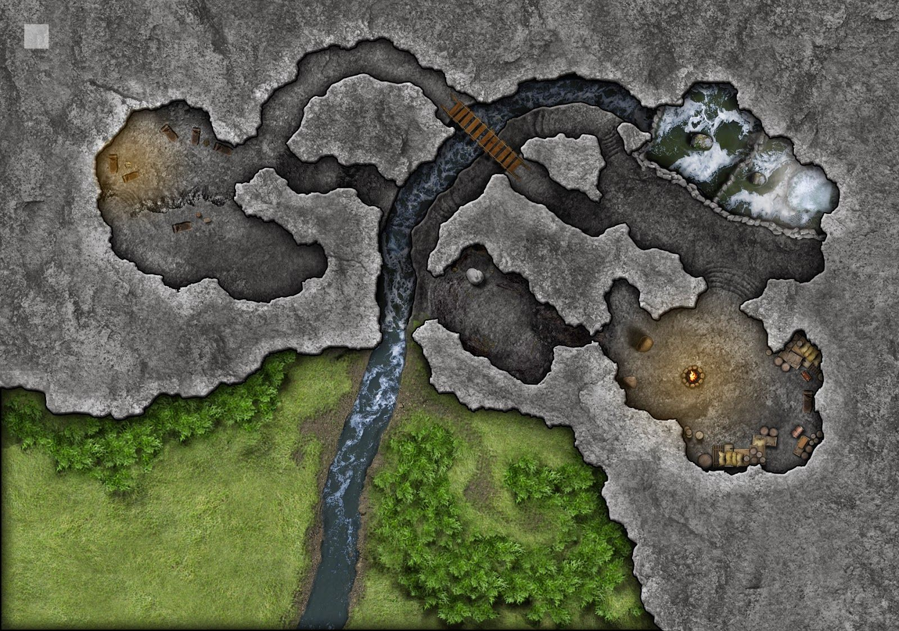

Lost Mine of Phandelver 
Prologue Our party conisists of 4 memebers: myslef as Rurik the Blood Hunter fire Genasi, Eden as Pog the ranger lightfoot Halfling, Rebecca as Chiko the Sorceress Rock Gnome, and Jack as Keith the clumbsy Bard Dragonborn. Chapter1 - Goblin Ambush Our party began travelling through a wood where we sighted a grusome tragedy where a turnt over cart and several dead horses lay. Ambushed by a small gang of goblins. The initial contact came where Pog was shot in the shoulder by a black arrow, fearless or stupid, ignores her immediate wound and swings her crossbow around to take an immediate counter attack, shooting off a bolt that impacts the goblin whom shot the arrow at her directly in the heart killing the beast instantly. In a flash Rurik's superior reaction speeds aloud him to lose a javelin; hurling it almost 80 feet over his party members heads and impaling the farthest goblin through its skull, dispatching the goblin before it could even blink. The 3rd goblin had charged forward and swung its scimitar missing Keith and lodging it deep into the overturned cart's wheel. Keith bewildered by this attack plunges his scimitar through and through the goblins arm to the hilt of the blade. The goblin lets out an agonising screach before Chiko plungers her dagger deep into the goblins chest. The 4th goblin in shear panick drops its weapons and begins to flee. Rurik feeling greatness through himself after his excellent marksmentship picks up the 4th goblins sword and attempts to launch the the blade to kill the fleeing pig, dramatically fails hurling the weapon skyward before the blade plunges deep into the earth barely 4ft infront of himself. Keith lets out a final command to stop vagrant